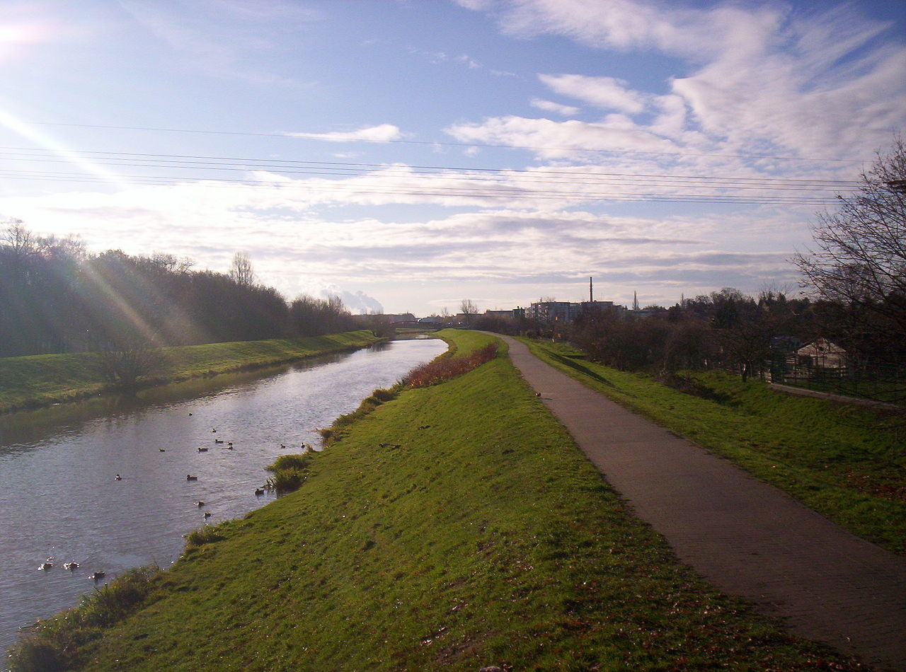
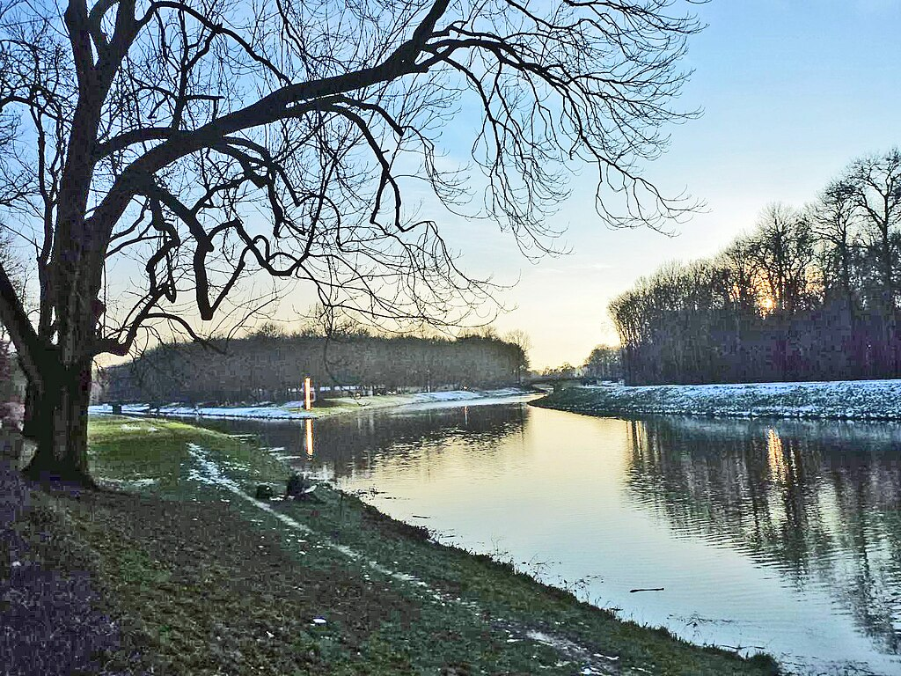
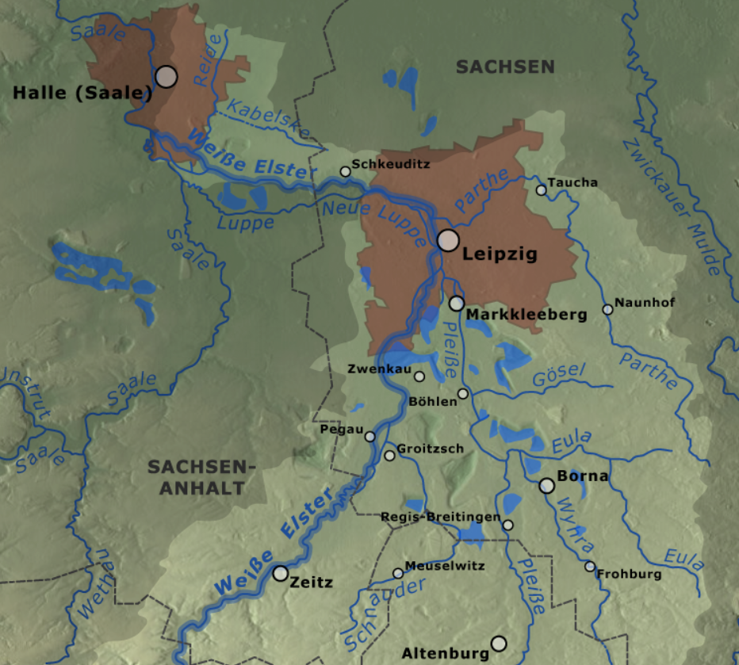
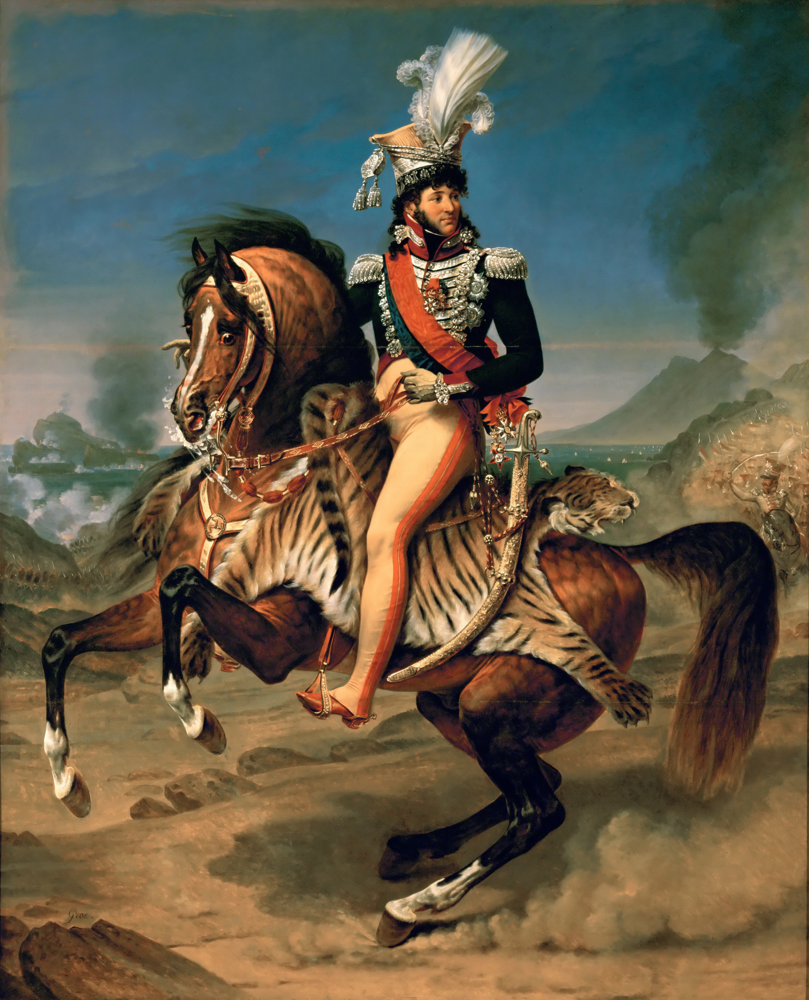
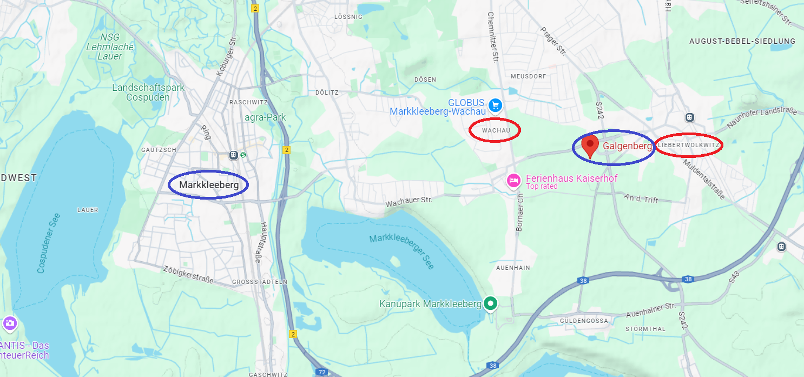
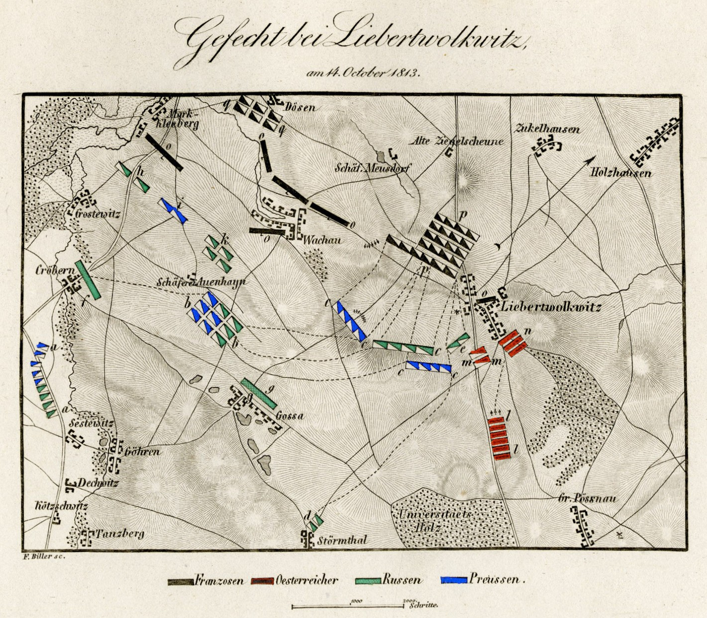
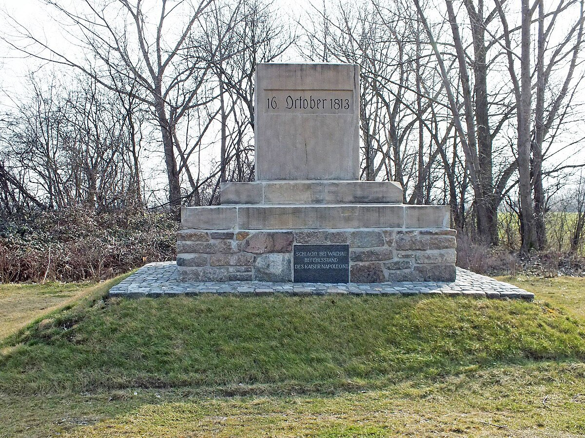
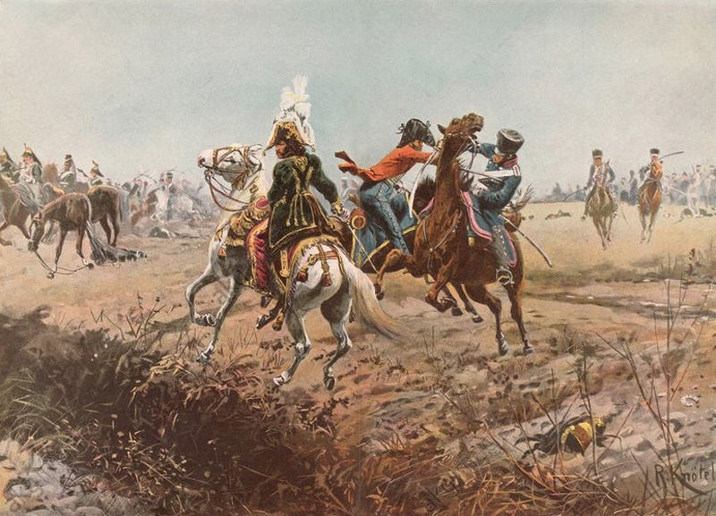

라이프치히 전투 (2) - 뮈라의 전초전
게시: 2025-06-02T06:30:40+09:00
나폴레옹은 누구보다 전투 전에 지도를 열심히 들여다보는 지휘관이었습니다. 그런 그에게 라이프치히 주변을 남북과 동서로 어지럽게 가로지르는 플라이서(Pleiße), 바이서 엘스터(Weiße Elster, 하얀 엘스터), 파르터(Parthe)의 세 지류들은 하나하나가 1개 군단에 해당하는 중요성을 가진 존재들이었습니다. 엘베강 같은 커다란 강이 아니더라도, 사람이 걸어서 건널 수 없는 이 지류들은 극복할 수 없는 장벽까지는 아니었지만 부대의 이동을 크게 지연시키는 장애물이었습니다. 나폴레옹은 라이프치히를 선점하고 자신의 방어선 안쪽의 다리들을 제외한 그 일대의 다리들을 미리 파괴해 놓으면 연합군의 움직임을 크게 제한할 수 있다고 생각했습니다. 이 세 강들 중 바이서 엘스터가 가장 큰 강이었고 파르터와 플라이서는 모두 바이서 엘스터로 흘러들어가는 지류였습니다. 라이프치히시 대부분은 이 강들의 동쪽에 위치했는데, 이 강들의 남서쪽에는 크고 작은 호수와 못들이 있는 습지라서 대규모 병력이 전개되기에는 부적합했습니다. 특히 플라이서강 남동쪽에는 일련의 언덕들과 마을들이 위치하고 있어 군사적으로 매우 중요한 방어 거점이 될 수 있었습니다. 라이프치히의 북쪽에서는 엘스터강의 우안, 즉 동쪽 강변에는 뫼커른(Möckern)과 린덴탈(Lindenthal)이라는 마을이 있었고, 이 곳이 라이프치히의 북쪽 방어 거점으로 적합했습니다.

(플라이서(Pleiße) 강은 남쪽에서 발원하여 라이프치히에서 바이서 엘스터(Weiße Elster) 강과 합류하는 작은 강입니다. 이 사진은 라이프치히 외곽의 마클리베르크(Markkleeberg)에서의 인공적으로 정돈된 모습입니다. 그렇게 넓지는 않습니다.)

(플라이서강이 바이서 엘스터강과 합류하는 지점의 모습입니다.)

(라이프치히 인근의 강들을 잘 보여주는 그림입니다. 굵은 파란 선으로 강조된 것이 바이서 엘스터, 즉 하얀 엘스터강입니다. 플라이서강도 파르터강도 모두 하얀 엘스터강에 합쳐지는 지류에 불과하지만, 하얀 엘스터강 자신도 잘러(Saale) 강으로 흘러 들어가는 지류입니다.) 이런 지형지물을 잘 이용하면 슈바르첸베르크와 블뤼허가 서로 연결되지 못한 상태에서 각개격파할 수도 있었습니다. 게다가 더 중요한 요소도 있었습니다. 드레스덴이 아니라 라이프치히에서 싸우게 된 이유 중 하나는 보헤미아 방면군이 동서로 길게 뻗은 얼츠거비어거 산맥의 여러 곳을 한꺼번에 넘어 작센 후방에 침입했기 때문이었습니다. 뜻하는 바는 지금 당장은 보헤미아 방면군 자체도 동서로 길게 늘어진 상황이라서 라이프치히에 그들이 모두 집결하는 것에도 시간이 꽤 걸린다는 것이었습니다. 나폴레옹이 뮈라에게 고작 7만 정도의 병력을 주고 18만이 넘을 보헤미아 방면군을 막으라고 한 것도 그런 이유에서였습니다. 그런데 과연 뮈라가 그런 지연 작전에 적합한 인물이었을까요? 뮈라는 나폴레옹과 거의 정반대의 성격을 가진 인물로서, 모든 것을 즉흥적으로 결정하는 지휘관이었습니다. 가장 대표적인 것이 지도에 대한 태도였습니다. 나폴레옹은 뮈라가 지도도 보지 않고 싸운다고 불평했고, 그런 지적을 받고도 뮈라는 공공연하게 '내 작전 계획은 적군이 눈 앞에 있어야 만들어진다'라고 떠들었습니다. 나폴레옹도 그런 뮈라가 몹시 미덥지 못했던지, 라이프치히로 가면서도 뮈라에게 연달아 편지를 써대며 '절대 마르몽의 제6군단을 일찍부터 전선에 투입하지 말라, 원래 승리는 적절한 때 적절한 곳에 예비부대를 투입할 때 얻을 수 있는 것이다'라며 병법의 기초를 가르치기도 했습니다.

(뮈라가 책임감이 투철하다거나 나폴레옹에게 충성심이 강한 인물도 아니었습니다. 특히 러시아에서 먼저 귀환한 나폴레옹의 뒤를 이어, 빌나에서부터 그랑다르메의 후퇴 작전을 총지휘하던 뮈라의 태도는 그야말로 무책임한 것이어서, 그 난장판을 나폴레옹이 직접 보았다면 아마 두 번 다시 뮈라에게 지휘권을 맡기려 하지 않았을 것입니다. 게다가 그렇게 저 혼자 살겠다고 제멋대로 지휘권을 외젠에게 내던지고 1813년 1월 중순에 나폴리로 되돌아갔던 뮈라는 이미 그때부터 자신의 나폴리 왕좌를 지키기 위해 비밀리에 오스트리아 및 영국측과 협상을 시작하고 있었습니다. 나폴레옹이 그걸 알았는지 모르겠으나, 워낙 인재가 부족해진 나폴레옹은 1813년 여름 휴전 기간 중 뮈라에게 구구절절 편지를 써서 자신을 도울 것을 호소했고, 뮈라는 별로 명석하지 않은 머리를 굴려보다 드레스덴으로 왔던 것입니다. 이 그림은 1812년 러시아 원정을 떠난 사이 그로(Gros)에게 그리게 한 것인데, 나름 뮈라의 정치적 야심이 녹아있는 그림입니다. 배경에 보이는 화산은 바로 베수비오 화산이고, 멀리 보이는 배경의 해안과 섬에 포연이 자욱한 것은 1808년 그가 나폴레옹의 도움 없이 혼자 힘으로 영국군으로부터 카프리(Capri) 섬을 되찾은 것을 묘사한 것입니다. 즉, 뮈라는 자신이 나폴레옹과는 무관하게 스스로 왕국을 정복한 사람으로 보이고 싶었던 것입니다.)
10월 14일 낮, 나폴레옹이 라이프치히에 도착할 때 즈음 나폴레옹 귀에는 맹렬한 포격 소리가 들어왔습니다. 나폴레옹은 라이프치히 시내에 머물지 않고 이 소리에 이끌려 라이프치히 남쪽까지 말을 달렸습니다. 그 소리는 뮈라가 보헤미아 방면군의 선두 부대와 싸웠던 리버트폴크비츠(Liebertwolkwitz) 전투의 포성이었습니다. 10월 14일 당일에는 아직 나폴레옹의 본진 대부분이 라이프치히에 도착하기 이전이었고 보헤미아 방면군도 비트겐슈타인이 이끄는 전위 부대 정도만 도착한 상황이었습니다. 라이프치히 남쪽 전선에서 마클리베르크(Markkleeberg) 마을에서 리버트폴크비츠 마을까지의 약 8km 전선에 전개된 뮈라의 병력은 약 5만으로서, 포니아토프스키의 제8군단 6천, 빅토르의 제2군단 1만5천, 로리스통의 제5군단 1만3천 등을 포함하고 있었습니다. 그에 맞선 비트겐슈타인에겐 고르차코프(Gortchacov)와 오이겐 폰 뷔르템베르크(Eugen von Württemberg)의 러시아군 및 클레나우(Klenau)의 오스트리아군 약 6만이 있었습니다. 비트겐슈타인은 그 일대에 전개된 뮈라의 병력이 전선을 사수하려는 것인지 아니면 후퇴하는 본대의 뒤를 지키는 후위 부대인지 확인하는 정도의 가벼운 정찰 전투를 시작했습니다. 뮈라의 의도는 이 전선을 지키려는 것이었으므로 비트겐슈타인의 의도와는 달리 상당히 치열한 전투가 벌어졌는데, 뮈라는 한때 리버트폴크비츠를 빼앗기기도 했지만 결국 다시 되찾는 등 꽤 잘 싸웠습니다. 이는 뮈라의 지휘가 대단했다기 보다는 그 일대의 지형지물이 방어측에 꽤 유리했기 때문이었습니다. 가령 아우엔하인(Auenhain) 농장에는 크고 튼튼한 벽돌 건물이 많아서 그랑다르메는 이 농장을 요새처럼 이용하여 잘 싸웠고, 특히 그 일대에서 가장 높은 고지인 갈건베르크(Galgenberg, 교수대 언덕이라는 뜻)를 선점한 그랑다르메의 포병대가 그 일대를 제압할 수 있기 때문이었습니다. 나폴레옹이 들은 포성이 바로 그 소리였습니다.

(갈건베르크는 지도에서 바차우(Wachau)와 리버트폴크비츠 마을 사이에 놓인 평탄한 고지로서, 현대 행정 구역상 라이프치히와 마클리베르크 사이의 경계가 되고 있습니다.)

(1813년 10월 14일, 리버트폴크비츠 전투의 상황도입니다. 프랑스측에서는 이를 리버트폴크비츠 전투라고 불렀고, 연합군 측에서는 바차우 전투라고 불렀습니다.)

(갈건베르크가 가장 높은 고지였기에, 바로 며칠 뒤인 10월 16일 라이프치히 전투 첫날 나폴레옹은 이 자리에 사령부를 차리고 전투를 지휘했습니다. 1852년, 라이프치히시는 그를 기념하여 이 자리에 기념비를 세웠고 그 앞면에는 'Schlacht bei Wachau Befehlsstand des Kaiser Napoleon I' 즉 '바차우 전투, 나폴레옹 1세의 사령부'라고 새겨져 있습니다. 뒷면에 새겨진 작은 명패가 더욱 인상적인데, 그냥 'Hiob 38,11' (욥기 38장 11절) 이라고 되어 있습니다. 욥기 38장 11절의 내용은 이렇습니다. "이르기를 네가 여기까지 오고 더 넘어가지 못하리니 네 높은 파도가 여기서 그칠지니라 하였노라") 뮈라의 5만 병력 중에는 약 1만의 기병대까지 포함되어 있었습니다. 그리고 뮈라는 영리하게도 갈건베르크 고지 뒤에 그 기병대를 숨겨두고 있었습니다. 보헤미아 방면군의 기병대가 아군 보병들을 공격하자 뮈라는 그에 맞서 자신의 기병대를 출동시켰는데, 이것이 그렇게 좋은 결과를 내지 못했습니다. 먼저, 그 지대는 대개 평지였지만 바로 전날 내린 비로 인해 그 일대는 곳곳이 진흙탕이 되어 기병대가 돌격하기엔 그다지 적절하지 않았습니다. 따라서 갈건베르크 고지의 포병대와 보병대의 조합으로도 적 기병대에 충분히 맞설 수 있었을 것입니다. 그러나 칼을 손에 쥔 사람은 꼭 휘두르고 싶은 것이 인지상정인데다 그 사람이 바로 유럽 최고의 기병 뮈라였으니, 무려 1만의 기병대를 두고도 쓰지 않을 리가 없었습니다. 그런데 이 1만 기병들은 대부분이 불과 몇 개월 전에야 안장 위에 앉아본 그야말로 초짜들이었습니다. 그러다보니 이들에게 베테랑 기병들과 같은 기량과 전술을 요구할 수 없었습니다. 그런 미숙한 기병들을 좀 더 잘 통제하기 위해서였는지 뮈라는 이들을 돌격시킬 때 정상적인 대형보다 훨씬 더 촘촘히 밀집시켜 돌격시켰는데, 이것이 오히려 더 좋지 않은 결과를 냈습니다. 비정상적으로 밀집된 기병 돌격은 훨씬 더 쉽게 뒤엉켰고 적의 반격에 더 빨리 무너졌던 것입니다. 다행히 연합군의 기병대도 그다지 숙련된 기병들은 아니었고 똑같이 짓무른 대지 위를 달려야 했으며, 결정적으로 연합군 기병들은 각 부대별로 따로따로 투입되어 큰 효과를 보지 못했습니다. 이렇게 양측이 돌격했다가 반격을 받고 물러났다가 재집결한 뒤 다시 돌격하는 패턴이 반복한 결과, 양측은 별다른 뚜렷한 결과를 내지 못하고 서로 비슷한 사상자만 낸 채 오후 일찍 마무리되었습니다. 양측이 각각 1만씩, 약 2만의 기병들이 격돌했던 이날의 이 기병전은 나폴레옹 전쟁 중 최대 규모의 기병 돌격으로 기록됩니다. 이 전선의 총사령관이었던 뮈라는 두 번쨰 기병 돌격부터 직접 검을 뽑아들고 이 돌격에 참여했습니다. 이게 과연 필요한 일이었는지는 의견이 엇갈릴 수 있습니다. 기병 돌격에서는 숙련도 못지 않게 사기가 중요한 법인데, 미숙한 기병들을 데리고 전과를 올리기 위해서는 전설에 가까운 뮈라 자신이 직접 위험을 무릅쓰고 지휘하여 병사들의 사기를 끌어올려야 했다고 생각할 수도 있습니다. 반대로 총사령관이 할 일은 검 한 자루를 휘두르는 것보다는 망원경과 지도를 이용하여 전선을 통제하고 지휘하는 것인데 불필요한 위험에 자신을 노출시켰다고 비난할 수도 있습니다. 실제로 뮈라는 이날 여러 차례 돌격을 감행하다 최소 2번은 적에게 생포될 뻔 했다고 합니다. 특히 후퇴하던 중 한 번은 프로이센 제1 노이마르크(Neumark) 용기병 연대 소속의 디 리퍼(De Lippe)라는 중위가 뮈라에게 달려들며 '왕이시여, 멈추시오 (Arrête, Roi)' 라고 프랑스어로 반복하여 외치며 뮈라를 잡으려 들었습니다. 뮈라 바로 옆에 뒤따르던 그의 호위병이 그를 찔러 죽였으므로 뮈라는 무사히 탈출할 수 있었고, 그 호위병은 나중에 나폴레옹으로부터 레종도뇌르 훈장을 받았습니다.

(뮈라의 호위병이 디 리퍼 중위를 쓰러뜨리며 뮈라를 구하는 장면을 묘사한 그림입니다. 디 리퍼 중위는 어떻게 그 수많은 기병들 속에서 뮈라를 알아보았냐고요? 저 트레이드 마크인 호랑이 가죽과 깃털 모자는 당시 온 유럽이 알고 있었습니다.) 이 날의 전투는 양측 모두 각각 약 2천 정도씩의 사상자를 내며 결국 무승부로 끝났습니다. 아쉬운 점이라면 그랑다르메에 그토록 부족했던 소중한 기병대를 별 의미도, 성과도 없이 투입하여 더 소모시켰다는 점이었습니다. 전투 도중에 현장에 도착한 나폴레옹은 이 전투 지휘에는 거의 관여하지 않았으며, 마르몽에게 보내는 편지에서는 이 전투를 그저 '전위대끼리의 충돌' 정도로 표현하며 연합군 300명 정도를 포로로 잡았다고만 적었습니다. 이 전투의 의미는 이제 나폴레옹이 싸우게 될 전선을 확정짓는 것이었습니다. 이제 관건은 어느 편 병력이 더 빨리 라이프치히에 도착하느냐 하는 것이었습니다. Source : The Life of Napoleon Bonaparte, by William Milligan Sloane Napoleon and the Struggle for Germany, by Leggiere, Michael V With Napoleon's Guns by Colonel Jean-Nicolas-Auguste Noël https://www.britannica.com/event/Napoleonic-Wars/Dispositions-for-the-autumn-campaign http://www.historyofwar.org/articles/campaign_leipzig.html https://warhistory.org/@msw/article/leipzig-battle-of-the-nations https://www.encyclopedia.com/history/encyclopedias-almanacs-transcripts-and-maps/leipzig-battle-0 https://stefanov.no-ip.org/MagWeb/1stempir/34/fe34lieb.htm https://www.frenchempire.net/biographies/murat/ https://de.wikipedia.org/wiki/Galgenberg_%28Leipzig/Markkleeberg%29 https://de.wikipedia.org/wiki/Gefecht_bei_Liebertwolkwitz https://en.wikipedia.org/wiki/Equestrian_Portrait_of_Joachim_Murat,_King_of_Naples